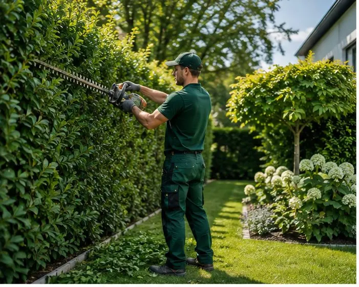

Leistung · Hecken- & Baumschnitt
Schnitt für Schnitt zur richtigen Zeit
Eine Hecke verzeiht viel – aber nicht den falschen Zeitpunkt. Wir schneiden fachgerecht, halten die gesetzlichen Schonzeiten ein und nehmen das Schnittgut gleich mit.
Scrollen Sie die Schere entlang
Eine gerade Kante ist kein Zufall

Wann darf geschnitten werden?
Der Kalender entscheidet mit
Vom 1. März bis 30. September schützt das Bundesnaturschutzgesetz brütende Vögel: Radikalschnitte sind dann tabu, schonende Formschnitte erlaubt. Wir planen Ihren Schnitt so, dass beides passt – Gesetz und Pflanze.
Unsere Schnittarbeiten
Von der Buchsbaumkugel bis zur Fällung
- Form- und Pflegeschnitt für Hecken aller Größen
- Obstbaumschnitt für gesunden Ertrag
- Rückschnitt von Sträuchern und Gehölzen
- Fällungen inklusive Genehmigungs-Check
- Häckseln und Abtransport des Schnittguts
Sicherheit gehört dazu: Wir arbeiten mit geprüftem Gerät, sichern die Umgebung ab und sind für alle Arbeiten haftpflichtversichert.

Ihre Hecke wartet schon auf ihren Termin.
Schicken Sie uns ein Foto von Hecke oder Baum – wir sagen Ihnen, wann der beste Zeitpunkt ist und was der Schnitt kostet.
Weitere Leistungen